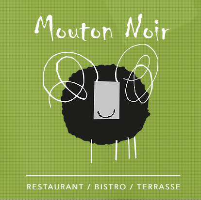
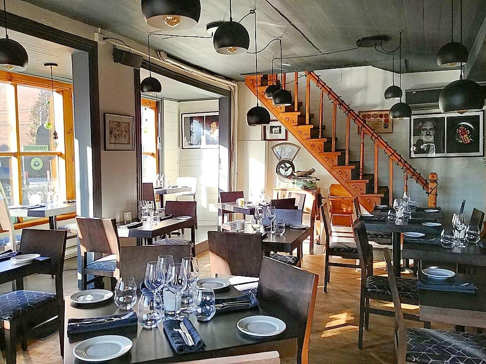
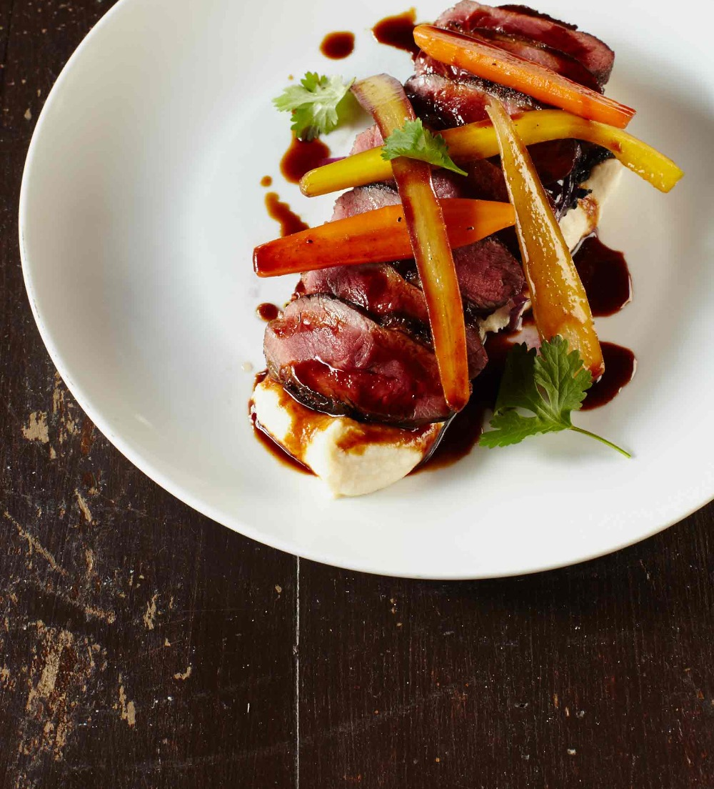
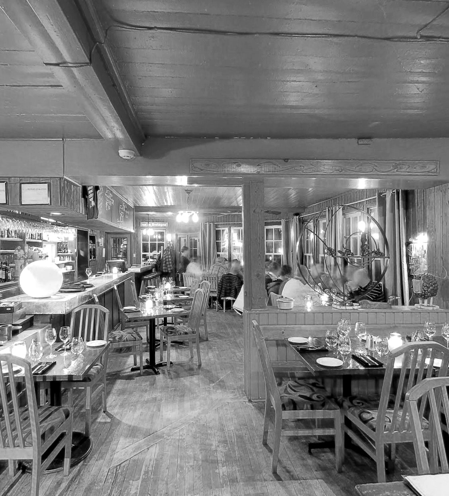

Cuisine de Charlevoix
Agneau braisé, omble de Gaspésie, viandes bio de la région, fromages locaux — une carte courte qui suit les saisons et les artisans d'ici.

Réserver →// Restaurant — Bistro — Terrasse
Baie-Saint-Paul, Charlevoix
Produits des fermes d'ici, pêches du Saint-Laurent,
viandes bio de Charlevoix. Une table honnête,
généreuse et vivante — midi et soir.
Atmosphère feutrée, bois, lumière basse — et dehors, la rivière du Gouffre qui glisse sous la terrasse. Le Mouton Noir est un bistro de caractère où Charlevoix se mange, se boit et se raconte.


Agneau braisé, omble de Gaspésie, viandes bio de la région, fromages locaux — une carte courte qui suit les saisons et les artisans d'ici.
Installée au-dessus de la rivière du Gouffre, la terrasse offre l'un des plus beaux points de vue de Baie-Saint-Paul, de mai à octobre.
Le soir venu, les braseros et le chauffage extérieur prolongent les veillées — même quand la fraîcheur descend du fleuve.
À l'intérieur, une salle intime aux tons sombres, pensée pour les longues tablées, les bouteilles partagées et les desserts légendaires.
L'été, on y déjeune au son de l'eau. Le soir, on y dîne à la lueur des feux. C'est simple : c'est ici que Charlevoix est le plus beau.
Réserver en terrasse
Mardi à samedi
11h30 – 14h · 17h30 – 21h